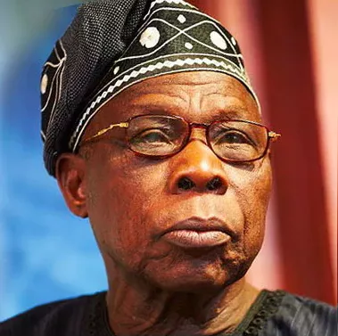

Chief Olusegun Matthew Okikiola Ogunboye Aremu Obasanjo
Nigerian political and military leader

Chief Olusegun Obasanjo
"I can assure you that
Nigeria is not just the number one item on our agenda.
Nigeria is in fact the only item on our agenda"
Achievements and Timeline of Chief Olusegun Obasanjo
5 March 1937
Olusegun Obasanjo was born
March 1958
Olusegun Obasanjo joined the Military
1967
Rear commander of Murtala Muhammed's Second Division of the civil war
1975 - 76
Chief of Staff, Supreme Headquarters
1976 - 1979
Military Head of State
1992 - 1995
Opposing Abacha
1995 - 1998
Imprisonment:
1998 - 1999
Campaigning for the presidency
1999 - 2007
Presidency
2007
Chairman of the PDP Board of Trustees,
A more detailed Biography cam be found on
wikipedia